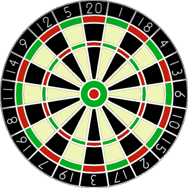

In the game of darts a player throws three darts at a target board which is split into twenty equal sized sections numbered one to twenty.

The score of a dart is determined by the number of the region that the dart lands in. A dart landing outside the red/green outer ring scores zero. The black and cream regions inside this ring represent single scores. However, the red/green outer ring and middle ring score double and treble scores respectively.
At the centre of the board are two concentric circles called the bull region, or bulls-eye. The outer bull is worth 25 points and the inner bull is a double, worth 50 points.
There are many variations of rules but in the most popular game the players will begin with a score 301 or 501 and the first player to reduce their running total to zero is a winner. However, it is normal to play a "doubles out" system, which means that the player must land a double (including the double bulls-eye at the centre of the board) on their final dart to win; any other dart that would reduce their running total to one or lower means the score for that set of three darts is "bust".
When a player is able to finish on their current score it is called a "checkout" and the highest checkout is 170: T20 T20 D25 (two treble 20s and double bull).
There are exactly eleven distinct ways to checkout on a score of 6:
| D3 | ||
| D1 | D2 | |
| S2 | D2 | |
| D2 | D1 | |
| S4 | D1 | |
| S1 | S1 | D2 |
| S1 | T1 | D1 |
| S1 | S3 | D1 |
| D1 | D1 | D1 |
| D1 | S2 | D1 |
| S2 | S2 | D1 |
Note that D1 D2 is considered different to D2 D1 as they finish on different doubles. However, the combination S1 T1 D1 is considered the same as T1 S1 D1.
In addition we shall not include misses in considering combinations; for example, D3 is the same as 0 D3 and 0 0 D3.
Incredibly there are 42336 distinct ways of checking out in total.
How many distinct ways can a player checkout with a score less than 100?
solve(max_limit=100) → █Solved: 2025-09-02
Solution to be restored.
Nothing here yet - come back when the dust has settled.